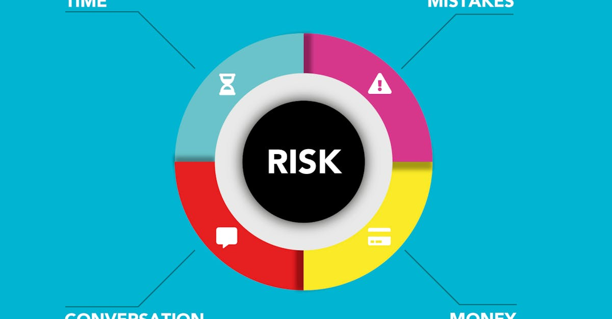

Le Ketman Project : une vigilance accrue au cœur de l'écosystème crypto
Dans un monde où la technologie blockchain et les crypto monnaies redéfinissent les frontières financières, la sécurité et l'intégrité de l'écosystème deviennent primordiales. L'Ethereum Foundation, pilier central du développement de l'une des plus grandes plateformes de contrats intelligents au monde, a récemment financé un projet d'une importance capitale : le Ketman Project. Ce programme, dont les détails ont été révélés par des sources fiables dans le milieu de la cybersécurité et de la blockchain, a réussi à identifier une présence significative de travailleurs nord-coréens au sein de divers projets crypto. L'initiative a alerté environ 53 projets suspects, mettant en lumière une menace subtile mais persistante émanant du régime de Pyongyang. Cette découverte souligne la nécessité pour les développeurs, les investisseurs et les plateformes de maintenir une vigilance constante. L'utilisation de technologies avancées, y compris les agents IA pour le trading, doit s'accompagner d'une compréhension approfondie des risques géopolitiques et des tactiques des acteurs malveillants. Le Ketman Project démontre que la défense de l'espace crypto ne repose pas seulement sur des avancées technologiques, mais aussi sur une intelligence humaine et analytique pointue, capable de déceler les menaces cachées.
👉 À lire : Fausse Ledger: Espressif Systems dans le viseur

La Corée du Nord et son appétit pour les crypto monnaies : un enjeu géopolitique majeur
Le régime nord-coréen est depuis longtemps suspecté de chercher à contourner les sanctions internationales en utilisant des moyens non conventionnels. Les crypto monnaies, par leur nature décentralisée et souvent transfrontalière, représentent un vecteur d'intérêt particulier pour Pyongyang. Les rapports des Nations Unies et des agences de renseignement occidentales ont à plusieurs reprises pointé du doigt les activités de piratage informatique menées par des groupes affiliés à la Corée du Nord, visant à voler des fonds en crypto monnaies pour financer le programme nucléaire et balistique du pays. Le Ketman Project s'inscrit dans cette lignée d'efforts visant à cartographier et à neutraliser ces menaces. L'identification de 100 travailleurs nord-coréens infiltrés dans des projets crypto est une confirmation tangible de l'ampleur de ces opérations. Ces travailleurs, souvent qualifiés dans le domaine des technologies de l'information, sont employés pour développer des logiciels, gérer des infrastructures ou même participer à des activités de minage, contribuant ainsi indirectement aux objectifs financiers du régime. La stratégie de diversification des sources de financement de la Corée du Nord passe indéniablement par l'exploitation des nouvelles technologies, et la blockchain occupe une place de choix dans cette équation.
👉 À lire : Sécurité Crypto : Wall Street sceptique face aux promesses
Méthodologie du Ketman Project : comment débusquer les opérateurs nord-coréens
Le succès du Ketman Project repose sur une méthodologie rigoureuse et une analyse approfondie des données. Financé par l'Ethereum Foundation, le projet a mobilisé des experts en cybersécurité, en analyse de données et en renseignement pour identifier les schémas d'activité suspects. L'objectif était de repérer les individus travaillant pour le compte de projets crypto tout en étant basés en Corée du Nord ou ayant des liens avérés avec le régime. Cela implique souvent une combinaison d'analyses techniques et humaines :
- Analyse des adresses IP et des traces numériques : Identification des connexions provenant de régions connues pour être sous le contrôle de la Corée du Nord, ou des habitudes de navigation et de communication inhabituelles.
- Vérification des profils et des antécédents : Recherche d'informations publiques ou obtenues via des canaux de renseignement sur les développeurs et les employés des projets crypto.
- Analyse des flux financiers : Suivi des transactions suspectes ou des schémas de blanchiment d'argent qui pourraient être liés à des opérateurs nord-coréens.
- Utilisation d'outils d'intelligence artificielle : Les algorithmes peuvent être employés pour traiter de vastes quantités de données, détecter des anomalies et corréler des informations qui échapperaient à une analyse humaine classique. Ces outils peuvent aider à identifier des patterns récurrents associés aux activités des groupes de hackers nord-coréens.
La collaboration avec 53 projets crypto a permis de recouper les informations et d'alerter ces entités sur la présence potentielle d'opérateurs nord-coréens dans leurs équipes, leur permettant ainsi de prendre des mesures correctives. Cette approche proactive est essentielle pour assainir l'écosystème.

Implications pour les projets crypto : sécurité, réputation et conformité
La découverte de 100 travailleurs nord-coréens infiltrés dans des projets crypto a des implications sérieuses pour les entités concernées, mais aussi pour l'ensemble de l'industrie. Premièrement, la sécurité des fonds et des données est directement compromise. Ces opérateurs peuvent chercher à voler des clés privées, à introduire des vulnérabilités dans les smart contracts ou à exfiltrer des informations sensibles. Deuxièmement, la réputation des projets identifiés peut être gravement entachée. Être associé, même involontairement, à des activités liées à un régime sanctionné peut entraîner une perte de confiance de la part des investisseurs et des utilisateurs. Enfin, la conformité réglementaire devient un enjeu majeur. Les gouvernements et les organismes de réglementation intensifient leur surveillance des activités liées aux crypto monnaies, et toute connexion, même indirecte, avec des entités sanctionnées peut entraîner des sanctions sévères. Pour les projets qui emploient des travailleurs à distance, notamment dans le secteur de l'IA appliquée au trading crypto, il est crucial de mettre en place des processus de vérification d'identité et de diligence raisonnable robustes. L'utilisation de solutions de sécurité avancées et la sensibilisation des équipes aux risques de phishing et d'ingénierie sociale sont également indispensables pour prévenir toute compromission.
L'IA et le trading crypto : un outil pour la défense et l'attaque
Dans le contexte actuel, où les menaces cybernétiques évoluent constamment, l'intelligence artificielle (IA) joue un rôle de plus en plus important, tant pour les attaquants que pour les défenseurs. Pour les acteurs malveillants, comme les groupes nord-coréens, l'IA peut être utilisée pour automatiser les attaques, identifier des cibles vulnérables, ou même pour générer des codes malveillants plus sophistiqués. Cependant, l'IA est également une arme puissante dans l'arsenal des défenseurs. Les systèmes de sécurité basés sur l'IA peuvent analyser en temps réel des volumes massifs de données pour détecter des anomalies, des comportements suspects ou des tentatives d'intrusion. Dans le domaine du trading crypto, les agents IA, comme ceux promus par CryptoMind AI, peuvent non seulement optimiser les stratégies d'investissement 24h/24, mais aussi intégrer des modules de sécurité avancés. Ces agents peuvent être entraînés à identifier des schémas de transactions inhabituels, à détecter des tentatives de manipulation de marché, ou à alerter sur des risques potentiels liés à la géopolitique ou à des événements de sécurité majeurs. La capacité de l'IA à traiter rapidement des informations complexes et à réagir instantanément est un atout majeur pour naviguer dans un marché aussi volatil et exposé aux risques que celui des crypto monnaies. L'automatisation intelligente devient ainsi un levier essentiel pour la gestion des risques et la protection des actifs numériques.

Au-delà de la menace nord-coréenne : la nécessité d'une sécurité blockchain renforcée
Si l'alerte concernant les travailleurs nord-coréens est significative, elle n'est qu'un symptôme d'un problème plus large : la nécessité d'une sécurité renforcée dans l'ensemble de l'écosystème blockchain. Les crypto monnaies et la technologie sous-jacente attirent une diversité d'acteurs, allant des passionnés et des investisseurs aux criminels et aux États-nations cherchant à exploiter ses failles. La décentralisation, bien qu'étant une force fondamentale, peut aussi créer des zones d'ombre où les activités illicites peuvent prospérer si elles ne sont pas surveillées. Le Ketman Project, financé par l'Ethereum Foundation, démontre l'importance d'une approche proactive et collaborative pour identifier et contrer les menaces. Cela implique :
- Renforcement des audits de sécurité : Des audits réguliers et approfondis des smart contracts et des protocoles sont essentiels pour identifier et corriger les vulnérabilités avant qu'elles ne soient exploitées.
- Collaboration internationale : Une coopération accrue entre les gouvernements, les agences de renseignement et les acteurs privés de l'industrie crypto est nécessaire pour partager des informations et coordonner les efforts de lutte contre la cybercriminalité.
- Éducation et sensibilisation : Il est crucial d'éduquer les développeurs, les utilisateurs et les investisseurs sur les risques potentiels, les meilleures pratiques de sécurité et les techniques d'ingénierie sociale utilisées par les acteurs malveillants.
- Développement d'outils de sécurité avancés : L'innovation continue dans les technologies de sécurité, y compris l'IA, est indispensable pour faire face à l'évolution constante des menaces.
La résilience de l'écosystème crypto dépendra de sa capacité à maintenir un haut niveau de sécurité face à des défis de plus en plus complexes.
Conclusion : l'avenir de la crypto trading et la vigilance IA
La récente révélation du Ketman Project, mettant en lumière l'infiltration de 100 travailleurs nord-coréens dans des projets crypto, est un rappel brutal des défis de sécurité et géopolitiques auxquels l'industrie est confrontée. L'Ethereum Foundation, par son soutien à cette initiative, souligne l'importance capitale de la vigilance et de la transparence. Pour les professionnels du trading crypto, et particulièrement pour ceux qui s'appuient sur des outils avancés comme les agents IA, cette actualité renforce la nécessité d'une approche double : performance et sécurité. Un agent IA performant, capable de trader les cryptos 24h/24, doit impérativement intégrer des couches de sécurité robustes, capables d'analyser non seulement les marchés, mais aussi le contexte global des risques. Chez CryptoMind AI, nous comprenons que l'avenir du trading crypto réside dans la synergie entre l'intelligence artificielle et une compréhension approfondie des menaces. Nos agents sont conçus pour naviguer dans la complexité des marchés tout en intégrant des mécanismes de protection avancés. La découverte de ces infiltrations nord-coréennes ne doit pas freiner l'innovation, mais plutôt encourager l'adoption de solutions plus intelligentes et plus sûres pour protéger les investissements dans cet espace en constante évolution.